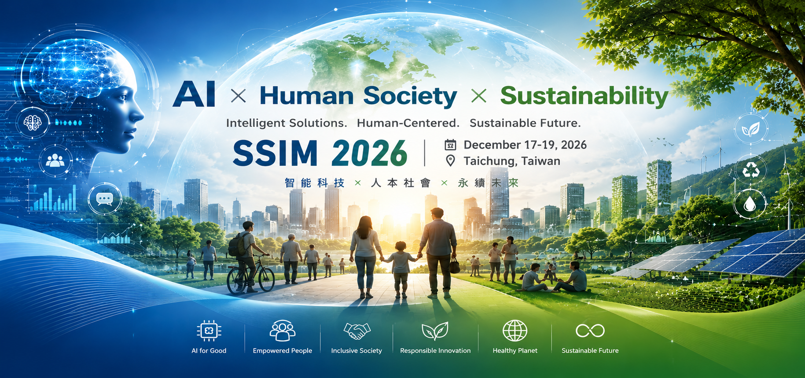

Welcome to SSIM 2026
The 6th International Conference on Social Sciences and Intelligence Management
🔴 Chaoyang University of Technology, Taichung, Taiwan
📅17-19 December 2026
🌍Hybrid Conference (Onsite & Online)
Theme: Human-Centered AI, Sustainable Digital Ecosystems, and Intelligent Transformation in Social Sciences
Welcome Message
On behalf of the Conference Chair and Organizing Committee, it is our great pleasure to welcome you to the 6th International Conference on Social Sciences and Intelligence Management (SSIM 2026), jointly organized by Chaoyang University of Technology, Taiwan, and Dong Thap University, Vietnam, and to be held in Taichung, Taiwan.
In an era where artificial intelligence and digital transformation are rapidly reshaping societies, the need to integrate technological innovation with human-centered values has never been more important. SSIM 2026 provides an international platform for scholars, researchers, educators, practitioners, policymakers, and industry professionals to exchange ideas, present research findings, and explore emerging challenges and opportunities across disciplines.
The conference theme, “Human-Centered AI, Sustainable Digital Ecosystems, and Intelligent Transformation in Social Sciences,” reflects our shared vision to promote interdisciplinary collaboration and responsible innovation. We strongly believe that meaningful progress in the digital age emerges through global academic exchange and cross-border cooperation.
Over the past five successful editions, SSIM has developed into an active and growing international conference, attracting participants from diverse countries and regions. It has served as a valuable platform for academic dialogue, research dissemination, and international networking. As SSIM enters its sixth edition in 2026, we are pleased to further strengthen its global reach through expanded international partnerships.
SSIM 2026 will feature distinguished keynote speakers, peer-reviewed paper presentations, panel discussions, and interactive sessions designed to foster collaboration and inspire new research directions. We hope participants will not only share their academic work but also build meaningful long-term collaborations.
We also warmly invite you to experience Taichung, a vibrant and welcoming city in central Taiwan, known for its culture, innovation, and hospitality.
We sincerely thank all authors, reviewers, keynote speakers, committee members, and partners from both Chaoyang University of Technology and Dong Thap University for their valuable contributions and support in making this conference possible.
We look forward to welcoming you to SSIM 2026 and to a successful and inspiring conference.
Sincerely,
Liza Lee
Conference Chair
SSIM 2026 Organizing Committee
Co-Host Institutions
- Chaoyang University of Technology, Taiwan
- Dong Thap University, Vietnam
Conference Theme
Human-Centered AI, Sustainable Digital Ecosystems, and Intelligent Transformation in Social Sciences
SSIM 2026 focuses on the integration of artificial intelligence, digital technologies, and social sciences to address contemporary societal challenges and opportunities. The conference encourages research that promotes ethical AI development, sustainable digital innovation, educational transformation, intelligent management, social inclusion, and human well-being.
Topics of interest include, but are not limited to:
- Human-Centered AI and Intelligent Learning Ecosystems
- Computational Technologies for Early Childhood Development and Interactive Learning
- Computational Approaches to Language Education, EMI, and Intelligent Communication Systems
- Intelligent Healthcare, Social Innovation, and Inclusive Technologies
- Computational Media, Digital Communication, and Information Ethics
- AI-Driven Business Analytics and Sustainable Governance
- Computational Social Sciences and Advanced Data Analytics
| Academic Milestone | Deadline |
| Abstract Submission Deadline | September 10, 2026 |
| Notification of Abstract Acceptance | September 25, 2026 |
| Full Paper Submission Deadline | October 15, 2026 |
| Notification of Full Paper Review | November 20, 2026 |
Latest News
June 11, 2026: Conference Venue
SSIM 2026 will be held at Chaoyang University of Technology, Taichung, Taiwan.
June 11, 2026: Web page launch
SSIM 2026 website is now online.
Keynote Speakers Highlights
🛡️ AI Security & Fraud Detection
Dr. Quoc Bao Dang (Dong Thap University)
Keynote: Document Verification in the AI Era: The Battle Against Presentation Attacks
Why Attend: Gain cutting-edge insights into AI-driven identity security, presentation attack detection, and remote verification from a leading cybersecurity expert.
🤝 AI Ethics & Social Impact
Dr. Hsi-sheng Wei (National Taipei University)
Keynote: The Future of Social Work in the Age of AI: From Practical Tools to Professional Collaboration
Why Attend: Explore the crucial intersection of human-AI collaboration and tech ethics with a globally recognized scholar in youth mental health and social work.